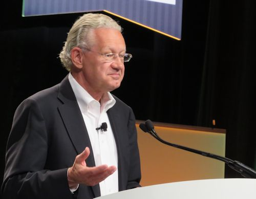
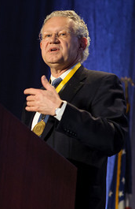

Aart de Geus
Chairman & CEO, Synopsys
Synopsys (SNPS) stock rose Thursday, after the maker of software used to design chips late Wednesday gave a short-term outlook that lagged Wall Street expectations but its longer-term outlook beat.
For its fiscal Q1 ending Jan. 31, Synopsys sees revenue of $475 million to $485 million, below analyst consensus estimates of $504.3 million. The company expects EPS minus items of 51 cents to 53 cents, where analysts had expected 62 cents.
"While we have not seen a material change in customer behavior, we realize that 2013 is another year in an extended period of uncertainty, and customers have remained somewhat cautious," Synopsys CEO Aart de Geus said on a conference call with analysts.
For its fiscal year ending Oct. 31, 2014, Synopsys guided revenue in the range of $2.06 billion to $2.085 billion, where analysts had modeled $2.1 billion. But it projected EPS ex items of $2.55 to $2.60, vs. analyst estimates of $2.54.
Growth in mobile devices, cloud computing and the "Internet of things" — more machines and other devices connecting to the Internet — are driving growth for the company, de Geus said.
In the mobile market, he sees a "shifting mix toward more lower-cost devices." Growth in cloud computing was driven by the increased use of mobile devices, social applications, video and "massive Internet search," he said, which bodes well for Synopsys.
Analyst Monika Garg at Pacific Crest Securities maintained an outperform, or buy, rating on Synopsys, with a price target of 45.
Synopsys stock was up nearly 2%, near 37, in midday trading in the stock market today. Synopsys stock hit an all-time high of 38.40 on Oct. 22.
"We believe the (electronic design automation) industry has been executing well in a tough environment," Garg wrote in a research report. "Synopsys is an EDA leader."
For its Q4 ended Oct. 31, EPS ex items rose 19% from the year-earlier period to 56 cents, a penny above views. Revenue rose 11% to $504.9 million, missing the consensus estimate of $507.6 million.
Synopsys provides software and services that chipmakers use to design integrated circuits and other electronic systems, a field known as electronic design automation.
SAN JOSE — The Democrats’ strategy for achieving immigration reform is coming into view: promise the tech industry what it wants in exchange for help lobbying for a comprehensive solution.
That message was on display yet again on Wednesday when Deputy Commerce Secretary Rebecca Blank addressed a gathering of tech chief executives here.
Blank reiterated the Obama administration’s support for granting green cards to foreign nationals who graduate with degrees in highly sought fields and creating an easier system to allow foreign entrepreneurs starting companies in the U.S. to live here, she said.
But none of that will happen unless corporate America, and the tech world in particular, let it be known they support more than just the parts of immigration reform that directly affect them.
“These are going to be linked,” Blank said at the Silicon Valley Leadership Group’s CEO Summit.
Blank’s comments come one day after Sen. Chuck Schumer (D-N.Y.) delivered an identical exhortation to the Internet Association at that group’s Capitol Hill gathering.
“The idea of just pushing your own proposal is a very bad idea, and I’m delighted you understand that,” said Schumer, one of a bipartisan Gang of Eight working on a comprehensive bill.
In Silicon Valley, Blank found that, perhaps, some tech execs don’t understand that.
Synopsys Chairman Aart de Geus, for instance, groused to Blank that linking the tech industry’s talent struggles to issues such as a path to citizenship for undocumented people in the U.S. and border security could jeopardize all of it.
“I’ve seen this train before and I remember this was the kiss of death,” de Geus said. “If you don’t want to solve a problem, then attach it to a bigger problem. I would ask that you decouple the problems.”
But Blank insisted the outcome of the 2012 election — and the assertion of nascent political power by Hispanic voters — means the issues are inextricably linked.
“You can’t politically decouple the issues,” she said. “The groups that care about path to citizenship or border security will block skilled immigration.”
De Geus was unsatisfied, warning: “You are the management of the country. Don’t come back to me in two years and say, ‘Well, we tried.’”
Blank received a markedly warmer response to her announcement that the U.S. Patent and Trademark Office would open a temporary satellite office in Menlo Park in May. The city, between San Jose and San Francisco, is the epicenter of the venture capital industry. The department hopes to find a permanent location for the office by next year.
Tech executives were delighted by that development, which they believe will help regulators better understand up close how patent wars harm innovation.
“Once you are immersed in an environment like Silicon Valley, you start to see the struggles,” said Laura Mather, co-founder of Silver Tail Systems.
“I do know the pains around software patents.”
On cybersecurity, Blank said Commerce is so concerned about vulnerabilities that there are some topics which employees only discuss on paper, not computers. She would not elaborate.
“I’m sure we’re not the only ones to go back,” she said.
She invited the tech industry to be part of the process of creating an information-sharing framework.
“There is a huge problem and there is no technical solution except to disconnect from a system that is so powerful,” de Geus said referring to the cyber threat. He described the situation as being akin to “modern warfare” and one that must be addressed by lawmakers.
CLARIFICATION: A previous version of this story mischaracterized statements made by Aart de Geus, Synopsys co-chief executive. He was not advocating disconnecting from the Internet but observing the technical and political challenges that come with cyber attacks.
On July 4, 1962, U.S. president John F. Kennedy declared “that the United States will be ready for a Declaration of Interdependence, that we will be prepared to discuss with a united Europe the ways and means of forming a concrete Atlantic partnership, a mutually beneficial partnership between the new union now emerging in Europe and the old American Union.” As negotiations for the Transatlantic Trade and Investment Partnership (TTIP) get underway, those words seem prescient. The TTIP has the potential to fulfill Kennedy’s vision.
This week, President Obama is traveling through Europe after attending a G-8 summit. The meeting’s agenda focused heavily on ways to restart economic growth—with trade as a central pillar of United States and European strategy. During the summit, the president announced the formal launch of transatlantic trade negotiations, the centerpiece of a fundamental rethink of the U.S.-European relationship that will prioritize economic ties.
The political ingredients for the TTIP are in place: a need for deficit-neutral economic stimulus to get the economy moving again, the support of a business community desperate to open new markets for exports and foreign investments, the approval of a labor community that recognizes that the United States and Europe have some of the world’s highest protections for workers, and a transatlantic relationship in need of a dynamic boost to confront the challenge posed by a new form of state capitalism best represented by China.
As an opening salvo to the launch of formal negotiations, the Bertelsmann Foundation and the Atlantic Council conducted a survey of key trade actors in the public, private and civil-society sectors to gauge their expectations of the approaching talks. We found broad support for the pact and a widespread belief that negotiations will be successful. Eighty-eight percent of those surveyed believe the United States and Europe will successfully come to an agreement. Fifty-five percent believe that an agreement can come into force by the end of 2016, approximating the timetable laid out by the U.S. administration and the European Commission.
But the study also contains a hint of warning for negotiators. Stakeholders are wary about the scope of a TTIP accord. Fifty-five percent believe the outcome will be only a moderate agreement, while 37 percent believe that it will be comprehensive, similar to the ambitious agreement envisaged by the United States and European leadership. The stakeholders note, correctly, that some of the most contentious issues, including policies on GMOs and convergence in the transatlantic regulatory-policy-making processes, are also among the most important at hand.
Some areas are already looking to be difficult. Politicians in some corners of France and the European Parliament are reluctant to include defense markets, government-procurement processes, and the protection of European cultural and linguistic exemptions for movies, music and other media. Initial statements from Congress, meanwhile, indicate that opening Europe to U.S. agriculture—especially the genetically modified foods that Europe has been hesitant to allow—must be an integral part of any treaty that they would accept.
In Washington, TTIP approval will require expedited pursuit of trade-promotion authority from Congress so that the administration can avoid a painstaking postnegotiation amendment process. More immediately, success will also require the administration to be actively engaged at the White House and cabinet levels. As TTIP negotiations move forward, leaders with both the requisite expertise in technical trade negotiation and the political acumen to navigate the halls of Congress and the European institutions in Brussels will be needed.
Negotiators should seek an agreement that is simultaneously ambitious and achievable. Agricultural issues and other traditional transatlantic disputes will remain important, but negotiators should focus on future-oriented growth sectors instead, since they represent vastly more important facets of the transatlantic economy. In fact, the traditional areas of dispute represent only around 2 percent of total transatlantic trade volume, according to the European Commission. Why should that stop progress on the remaining 98 percent?
The historical resonance of launching TTIP negotiations this summer could not be greater. This June coincides with the 50th anniversary of John F. Kennedy’s legendary 1963 Berlin speech, in which he expressed solidarity between Americans and Berliners as a powerful symbol of a universal aspiration for freedom.
Obama’s trip to the Europe and the launch of the TTIP are powerful signs of his administration’s second-term reprioritization of Europe. The trip also demonstrates that its well-publicized “pivot” to Asia does not mean America is abandoning its oldest and closest allies.
Aart De Geus is chairman and CEO of the Bertelsmann Foundation. Frederick Kempe is president and CEO of the Atlantic Council.
Since co-founding Synopsys in 1986, Dr. Aart de Geus has expanded Synopsys from a start-up synthesis enterprise to a world leader in electronic design automation (EDA).
Among the prestigious technology awards that Dr. de Geus has received is the honor of being named a Fellow of the Institute of Electrical and Electronics Engineers (IEEE) in January 1999. He was honored for pioneering the commercial logic synthesis market with the IEEE Circuits and Systems Society Industrial Pioneer Award in 2001, as well as for his “contributions to, and leadership in, the technology and business development of Electronic Design Automation” with the 2007 IEEE Robert N. Noyce Medal.
He has been singled out as an innovative business leader as well. In 2002, shortly after transacting the largest merger in EDA history, Dr. de Geus was named CEO of the Year by Electronic Business magazine. In November 2005, Electronic Business magazine selected Dr. de Geus as one of “The 10 Most Influential Executives.” In November of 2007, he was awarded the Silicon Valley Leadership Group (SVLG) “Spirit of the Valley” Lifetime Achievement Award. And in October 2008, he was presented with the Phil Kaufman Award for distinguished contributions to EDA.
Dr. de Geus is active in the business community as a member of the board of Applied Materials, SVLG, TechNet, the Fabless Semiconductor Association (FSA), and the Electronic Design Automation Consortium (EDAC).
His opinions are sought after by the semiconductor and design industries, as he has been an invited plenary speaker at many industry conferences, including ASP-DAC, the Design Automation Conference, DesignCon, the European Microelectronics Summit, the FSA Suppliers Expo, the International Electronics Forum, the International Symposium on Physical Design, the International Symposium on Quality in Electronic Design, the International Test Conference, SemiconWest, SEMI ITPC, and the TSMC Technology Symposium.
Dr. de Geus is also heavily involved in education for the next generation, having created in 1999 the Synopsys Outreach Foundation, which promotes project-based science and math learning throughout Silicon Valley.
When the Silicon Valley Engineering Council (SVEC) formed in 1989, the founders chose a silicon wafer with several integrated chips to represent its organization. This image continues to illustrate SVEC's dedication to honoring innovation and technological excellence each year.
This year, SVEC inducted Synopsys Chairman and Co-CEO Dr. Aart de Geus into its Engineering Hall of Fame at its annual Engineers Week Banquet, held in San Jose, Calif., on February 19, 2013. The SVEC honored Dr. de Geus as a visionary and leader in the electronic design automation industry and in the community.
Now in its 24th year, the Silicon Valley Engineering Hall of Fame aims to celebrate the accomplishments of engineers and technical leaders in Silicon Valley who have demonstrated outstanding professional achievement and have made significant contributions to the local community. Dr. de Geus was one of four eminent technologists, including two each from industry and academia, inducted this year. The other 2013 Engineering Hall of Fame inductees were Dr. David K. Lam, founder of Lam Research and current chairman of Multibeam Corporation and the David Lam Group; Dr. Martin Hellman, professor emeritus of electrical engineering, Stanford University; and Dr. David Hodges, professor emeritus, Dept. of Electrical Engineering and Computer Sciences, University of California, Berkeley.
Dr. de Geus joins an elite group of past inductees including Intel co-founders Robert N. Noyce and Gordon E. Moore, as well as HP co-founders William R. Hewlett and David Packard. Engineering Hall of Fame inductees are selected based on their professional achievement, service to the profession and service to the community. While some have since gone on to become household names, all are distinguished by their outstanding engineering and leadership accomplishments.
Dr. de Geus helped drive Synopsys' growth from a start-up synthesis enterprise with one product to a diverse, global company that leads the EDA industry in advanced technology and revenue. He is also heavily involved in education for the next generation, having created the Synopsys Outreach Foundation in 1999, which promotes project-based science and math learning throughout Silicon Valley.
Dr. de Geus looks at everything through the "N+1" filter: how can you move something of value to the next level? This way of thinking is the foundation of innovation, and Dr. de Geus has used this orientation to ask, and answer, important questions in technology, business and community programs.
Synopsys congratulates Dr. de Geus on receiving this honor and thanks him for leading by example and sharing his passion for innovation and learning.
Several years ago, after a phone briefing about a new product launch, I received a call back from the PR counsel who had organized the meeting. She asked me if I had all the info I needed regarding the product and the company. I said yes, and offered a minor apology for asking too many pointed questions of the marketing manager during the interview.
She said, “Oh, that’s okay. Talking to you is like talking to Aart de Geus. It’s clear you both think you’re the smartest guy in the room.”
That comment has come to mind multiple times since then, for two reasons. One, you never really know what impression you leave with people until it comes out at some capricious moment. And two, Aart de Geus isn’t the smartest guy in the room, just because he thinks so. He’s the smartest guy in the room, because he really is the smartest guy in the room.
That’s particularly applicable today with the EDAC event celebrating the 50th Anniversary of the EDA industry about to commence this evening in Silicon Valley. Per the Consortium, a plethora of industry luminaries will be in attendance. Per this writer, none will be more luminary than Dr. de Geus. If you’re reading this, you’re probably pretty well versed in both the history of EDA and the history of Aart de Geus. Nonetheless, here’s the latter in a nutshell.
Born in Northern Europe and raised in Switzerland, he was a celebrated jazz musician while still only a teen. He earned an MSEE at EPFL in Lausanne and a PhD from SMU in Dallas, where he studied under Spice-legend Ron Rohrer. At Rohrer’s suggestion, de Geus then worked for several years at GE on the East Coast, streamlining logic design at the company and assembling a team to support the effort, including delving deeply into the vagaries of synthesis.
That team and knowledge-base catapulted de Geus into close association with a group of interested parties on both coasts, who aggressively shaped a business plan and sought out investors, including GE and Harris Semiconductor, and thereby founded Synopsys in 1986. The decision was made to headquarter the company on the West Coast, Daisy veteran Harvey Jones was brought in as first president, and Synopsys made its initial appearance at the Design Automation Conference in 1988.
Aart de Geus was named president in 1992 and the rest is history. Since its founding in 1986, Synopsys has grown from glimmer to global behemoth. In the last several years alone, through fortuitous business moves, the company now employs over 8000 people and touts a market valuation in excess of $5.8 billion. Compare that with the next biggest players in the industry: Cadence at $4 billion and 5200 employees, and Mentor at $2.6 billion and 5000 employees.
So think about it. Tonight’s event at the Computer History Museum is set to celebrate 50 years of EDA, and this year’s DAC in Austin celebrated 50 years of the conference, yet the company that virtually defines the industry today is just over 25 years old. Okay, so why does that make Aart de Geus the smartest guy in the room? Well, consider these things.
Aart de Geus has been a leader of the company he helped found from the beginning. Under his unflagging, disciplined guidance Synopsys has grown to be the biggest EDA player on the block, by a mile. Over the last several decades, he’s also served as president of EDAC, as a director at Applied Materials, is on the board of the Silicon Valley Leadership Group and the GSA, and he’s an IEEE Fellow.
In and around those involvements, he’s continued to pursue music with his blues band, Legally Blue, has established his chops as a painter, has raised a family, has been a regular participant at Davos as an internationally recognized thought leader, and his company has promoted several highly admired women technologists including Synopsys SVP Deirdre Hanford and Karen Bartleson, currently serving as President of the IEEE Standards Association. None of the other big companies in EDA can even begin to match that record. Then there’s the regional science competition de Geus’ company founded, the Synopsys Silicon Valley Science and Technology Championship for students in grades 6 to 12.
Are you keeping score? Decades of industry leadership, music, art, culture, family, Davos, promoting women in technology, and supporting regional math and science education. And all of this, while also establishing a hyper-dominant market share within the industry.
Yeah, Silicon Valley is full of wunderkinds. You know who they are. They’ve made billions and become icons within their own carefully crafted Cults of Personality. Wouldn’t any one of them qualify as the smartest guy in the room?
Not really, because what truly makes Aart de Geus the smartest guy in the room is his restless intellect. When you talk to him, he’s right there in the moment. He’s willing and able to hear and respond to nuanced ideas and opinions. His is a nimble mind, and a mind that’s clearly and continually refreshing itself. Undoubtedly, he’s massively proud of all he’s accomplished, while never forgetting the obligations he shoulders day-in and day-out, but that’s not the impression you get when you talk to him.
The impression you get when you talk to Aart de Geus is of someone who’s never lost a thirst for knowledge, someone who never fails to embrace that special opportunity for compare and contrast that life offers to those for whom ideas and the world around them are of endless interest. The impression you get when you talk to Aart de Geus is that he is indeed the smartest guy in the room.
Today I am continuing with the vision talks given by EDA executives during DAC 2013 in Austin. The series started with Mentor’s Wally Rhines who talked about the coming end to Moore’s Law and the way in which the industry will get around that problem. Then Cadence’s Lip Bu Tan talked about the two platforms that have been driving the industry and the third even larger one that is just getting started. Today it is the turn of Synopsys founder, chairman and co-CEO – Aart de Geus.
“50 years of design automation, 50 years, and we the EDA industry are enabling the greatest techonomic push-pull in human history” is how Aart started his talk. He explained that we have enabled an exponential growth that has never before been seen in mankind. Such leaps are usually made up of a 50 year push phase followed by a 50 year applications pull. As past examples he cited the renaissance and the industrial age.
In 1451, Guttenberg invented the ability to print using machines. Aart compared aspects of this to the silicon printing process. This resulted in an explosion in the availability of books. By 1500 about twenty million volumes had been printed. That is a ten to the power 3 increase. This was the push phase. Aart then went on to explain what happened in the next 50 years enabled by standardization and mobility. During that period about 200 million books were printed, another order of magnitude increase.
Around 1750, the start of the industrial age, and the patenting of the first one horse-power steam engine. The first 50 years was dedicated to technical enablement, such as getting around the problem of steam boilers tending to explode. By the end of the century, 10,000 horse-power were supplied by steam. This figure quickly grew to over 200,000 horse-power giving us a 10 to the 6th exponential growth. The technology development enabled the application pull which was characterized by steam engines, ships and other mobile devices.
Aart then went back to our industry. In our industry, the exponential is characterized by Moore’s Law. The transistor was invented in 1948. The combination of digital switches, digital algebra, storage, IC connectivity and other technologies characterize the tech part of this exponential. Along with each advance in semiconductors there has been an equivalent advance in EDA. The success rate for chips is astonishing. A billion transistor chip is feasible today. That is ten to the 9th. The FinFET is a recent breakthrough that will power the future. New applications will gobble this up, but Aart said he hears the nay-sayers talking about costs rising and that design is more difficult. He explained that this is why the push-pull is so important. We have recently gone mobile and the technology is leading to advances in many fields, such as genomics.
If you can model, you may be able to simulate and that leads to analysis, optimization which in turn enables synthesis and automation. Our biggest challenge is perhaps to model the human brain and this will lead us to modify notions of who we are and how we function. The advances will also lead us to be able to tackle big problems such as global warming and acidification of our oceans. Balanced with a loss of privacy will come new experiences while shopping. Every 10X advancement that is made in chips enables new applications that are groundbreaking. The costs to create these will be almost a rounding error for the value that is created.
Aart pointed out one fallacy in our industry. He said that some people believe that each node must produce cheaper transistors. We are at the tipping point where it is no longer just about costs but about value and impact. With another 10 or 100X we will be in striking distance of putting intelligence into everything. This will present some tough challenges but we love tough.
Aart quoted Arthur C Clark who said that any sufficiently advanced technology is almost indistinguishable from magic. He said that many people in the room are creating magic and that we are the only people capable of appreciating that magic. He said he is amazed at the improvements that the younger generation is still making to our field.
He concluded by saying that EDA is the heart of the heart of high-tech.
 By Duffy Jennings, Valley Vision Editor
At the annual State of the Valley conference on February 18, 2011, Joint Venture bestowed its highest honor, the Packard Award for Civic Entrepreneurship, on Aart de Geus, co-founder, chairman and CEO of Synopsys. Carl Guardino, CEO of the Silicon Valley Leadership Group, presented the award to de Geus, a longtime member and former two-time chair of the SVLG board.
De Geus was born in 1954 in the small south Netherlands town of Vlardingen, near Rotterdam, one of three sons of Lodewijk and Martina de Geus. The family soon moved to Switzerland, where Aart grew up in a multicultural, multi-lingual environment, speaking Dutch at home, Swiss at school, and German with neighbors.
At an early age, he became interested in math, science, history and physics. He credits his early teachers with encouraging his unstoppable passion for learning, how people and things interact, and he loved to meet and talk with interesting people. “I can’t imagine not interacting with stimulating people,” he says.
At the same time, he had a creative side, too. At 14, he got his first guitar, took some lessons, and discovered another of his passions.
Inspired by American guitarist and songwriting legend “T-Bone” Walker, Aart cultivated what would be a lifelong love of electric blues. He also enjoyed folk and gospel music, and played in bands with his friends.
But rock stardom was not in the cards for Aart. He had much bigger things to accomplish. He earned his masters degree in electrical engineering at the Swiss Federal Institute of Technology before coming to the U.S. in 1979 to pursue his Ph.D. at Southern Methodist University in Dallas.
“I arrived in Dallas at midnight on August 1 to be startled by two things,” he recalls with a smile. “It was over 100 degrees in the middle of the night, and when I took the bus downtown I was surprised to find that the streets were full of cars.”
While completing his dissertation, Aart took a job in North Carolina with General Electric, where he managed the advanced computer-aided engineering group.
It was also in North Carolina, one night at a local square dance in 1985, that Esther John caught Aart’s eye. She was a Swiss undergrad studying epidemiology at the University of North Carolina in Chapel Hill at the time. They soon became inseparable, were married in 1991 and will be celebrating their 20th wedding anniversary this year.
In 1986, after GE exited the semiconductor business, Aart and several partners struck out on their own to start a company they named “Optimal Solutions.” When they moved the company to Silicon Valley, they found eight other companies with the same or similar names, so they re-named it as a hybrid of synthesis and optimization – “Synopsys.”
Over time the company flourished, as Aart became one of Silicon Valley’s early visionary executives. Always a hands-on leader as well as a listener, de Geus grew Synopsys into a global leader in electronic design automation. With headquarters in Mt. View, the company today has more than 60 offices in North America, Europe, Japan, Asia and India.
Aart likes to say that if you have a positive experience early on – especially with a teacher – it changes everything. That’s why he is the driving force behind the Synopsys Silicon Valley Technology Outreach Foundation, which works to promote project-based learning among students and teachers – particularly with its popular science fairs and sciencepalooza!
Since 1999, the Synopsys foundation has provided teacher support and training, support to schools for materials and equipment, project supplies and incentives for teachers and students developing science projects for competition. Today the foundation has grown to support more than 125,000 students and teachers annually.
The foundation serves as the major sponsor of the Synopsys Science and Technology Championship in Santa Clara County, and sponsors “Science-o-Rama!” a program of school-based fairs for middle and elementary school students.
The important thing to remember about Aart’s role in the community is that he does it not because it helps his bottom line or impresses his board or looks good in the press. He does it simply because he is answering a higher call to service beyond his everyday role and outside the workplace.
He also is active as a member of TechNet and serves on the boards of Applied Materials, the Global Semiconductor Alliance and the Electronic Design Automation Consortium.
He has previously been honored with SVLG’s “Spirit of the Valley” lifetime achievement award, the Phil Kaufman Award for distinguished contributions to EDA and the GSA Morris Chang Exemplary Leadership Award.
When travel and time permit, Aart still loves to play his guitar at local events and in the music room he recently added to his house. And he is also an accomplished painter, specializing in abstract expressionism inspired by the great Jackson Pollock.
More important than anything else in Aart’s life, though, is his family, Esther and his daughters, Martina, 18, a student at MIT in Boston, and Alicia, 15, a high schooler currently taking driving lessons from her dad.
SANTA CLARA, Calif. – Transistors may or may not keep getting cheaper, but in either case, the semiconductor industry still has plenty of headroom for growth, said Aart de Geus.
The co-chief executive officer of Synopsys is bullish on the industry’s abilities to master FinFETs and double patterning, but cold on 3-D chip stacking. In a keynote and press roundtable at an annual users group meeting here de Geus also vowed to make the Verdi debugger recently acquired with Springsoft the centerpiece of an updated verification offering and to migrate the Eve verification system to run on graphics processors.
“Moore’s Law has become irrelevant compared to the impact of new applications,” de Geus told several hundred engineers here. “Even if transistors do not become that much cheaper the demand for more capabilities will continue at breakneck speed and the economics will be there."
It costs $5-$7 billion to build a 14-nm fab today, and any chip coming out of it will have to comply with thousands of design rules, he noted. The need to use double patterning lithography and move to FinFET transistors is the next layer of that complexity, de Geus said. Nevertheless, he expressed optimism in the face of those challenges.
“For the first time, we can predict we can get to single-digit nanometer chip sizes,” he said in his keynote. “A number of chips are already designed with double patterning with our place and route tools [and] the number of companies committing to FinFETs has grown substantially,” he said.


At the press round table, de Geuss said China is coming up fast.
“We are seeing a fairly vibrant electronics economy in China, it is still relatively small compared to the U.S., Taiwan or Korea but I would not underestimate their government which has a lot of understanding of how strategic this industry is,” he said.
“China is one of fastest growing regions in semiconductors and EDA for us,” he added. “We have seen a radical improvement in the complexity of their chips from five or six years ago when they were two or three nodes behind to working today at 28 nm,” he said.
He declined to name any EDA competitors that may be emerging in China, but he did note that with Springsoft, Synopsys acquired in August a strong R&D base close to Taiwan’s foundries.
In his keynote, de Geus called Springsoft “the only [EDA] company higher in customer satisfaction than Synopsys” with a Verdi product that is “a de facto standard in debug.”


Synopsys Chairman and co-Chief Executive Officer Dr. Aart de Geus
The EDA solutions provider, Synopsys, plans to expand its activities in Israel and increase the capacity of its local development center in Verification process. Currently, the center employs about 20 experts in electronic designs authentication (verification). Synopsys Chairman and co-Chief Executive Officer Dr. Aart de Geus told Techtime that company’s main investments in 2013 will be focused in Verification.
“We recently acquired a lot of new technologies that we are now integrating into a unified platform.” Dr. Aart de Geus talked with Techtime during his visit to Israel this week. “This place has become a vibrating center of excellence in technology and entrepreneurial. For us this is an important place to be, since there are major development centers of leading companies such as Broadcom, Qualcomm, Marvell, Intel and others. They help us understand the major trends and future needs of the semiconductors market. It is important in refining our roadmap and evaluating our growth strategy.”

Synopsys is one of the largest providers of electronic chip design solutions, from the physical design level to the system level. The company headquartered from California and employs about 8,000 workers. Its 2012 sales reached $1.76 billion – an increase of 14% compared to 2011. Aart de Geus forecasted 2013 results will grow to $1.975 billion.
How can you evaluate the annual results?
Aart de Geus: “We are working on a three-year rental model and distribute our income according to the rental period. It means that approximately 80% of our 2013 revenues are registered now as backlog orders. So we have a very good idea about our expected income.”
During the recent year Synopsys accomplished staggering number of 9 mergers and acquisitions totaled $1 billion. It includes the $400 million deal to buy the Taiwanese firm SpringSoft, that brought Synopsys its expertise in Analog and Mixed Signal design tools.
“The chip industry is moving to System on Chip solution and the integration is more important than Moore’s Law. We are now focusing our efforts to integrate our technologies into a unified platform because in the world of SoC all the building blocks must be aligned perfectly. A failure of one component will result in the failure of the complete project.”
Q4 2013 Financial Highlights - Revenue: $504.9 million - GAAP earnings per share: $0.36 - Non-GAAP earnings per share: $0.56 FY 2013 Financial Highlights - Revenue: $1.962 billion - GAAP earnings per share: $1.58 - Non-GAAP earnings per share: $2.44 - Cash flow from operations: $496.7 million - Ending cash balance: $1.022 billion
MOUNTAIN VIEW, Calif., Dec. 4, 2013 /PRNewswire/ -- Synopsys, Inc. (Nasdaq: SNPS), a global leader providing software, IP and services used to accelerate innovation in chips and electronic systems, today reported results for its fourth quarter and fiscal year 2013.
For the fourth quarter of fiscal 2013, Synopsys reported revenue of $504.9 million, compared to $454.2 million for the fourth quarter of fiscal 2012. Revenue for fiscal year 2013 was $1.962 billion, an increase of 11.7 percent from $1.756 billion in fiscal 2012.
"Synopsys achieved excellent results in fiscal year 2013, and we are seeing strong product and customer momentum," said Aart de Geus, chairman and co-CEO of Synopsys. "Amid a landscape characterized by a mix of economic uncertainty and aggressive investment in designs, Synopsys is in a very strong competitive position, as many key customers rely on us to accelerate their differentiation and speed their time to market."
GAAP Results
On a generally accepted accounting principles (GAAP) basis, net income for the fourth quarter of fiscal 2013 was $56.9 million, or $0.36 per share, compared to $29.1 million, or $0.19 per share, for the fourth quarter of fiscal 2012. GAAP net income for fiscal year 2013 was $247.8 million, or $1.58 per share, compared to $182.4 million, or $1.21 per share, for fiscal 2012.
Non-GAAP Results
On a non-GAAP basis, net income for the fourth quarter of fiscal 2013 was $88.3 million, or $0.56 per share, compared to non-GAAP net income of $72.4 million, or $0.47 per share, for the fourth quarter of fiscal 2012. Non-GAAP net income for fiscal 2013 was $381.4 million, or $2.44 per share, compared to non-GAAP net income of $315.5 million, or $2.10 per share, for fiscal 2012. Reconciliation between GAAP and non-GAAP results is provided at the end of this press release.
Financial Targets
Synopsys also provided its financial targets for the first quarter and full fiscal year 2014. These targets do not include any future acquisition costs that may be incurred in fiscal year 2014. These targets constitute forward-looking information and are based on current expectations. For a discussion of factors that could cause actual results to differ materially from these targets, see "Forward-Looking Statements" below.
First Quarter of Fiscal Year 2014 Targets:
-- Revenue: $475 million - $485 million
-- GAAP expenses: $422 million - $444 million
-- Non-GAAP expenses: $377 million - $387 million
-- Other income and expense: $6 million - $8 million
-- Tax rate applied in non-GAAP net income calculations: approximately 24
percent
-- Fully diluted outstanding shares: 154 million - 158 million
-- GAAP earnings per share: $0.30 - $0.38
-- Non-GAAP earnings per share: $0.51 - $0.53 Full Fiscal Year 2014 Targets:
-- Revenue: $2.06 billion - $2.085 billion
-- Other income and expense: $7 million - $10 million
-- Tax rate applied in non-GAAP net income calculations: approximately 24
percent
-- Fully diluted outstanding shares: 154 million - 158 million
-- GAAP earnings per share: $1.69 - $1.82
-- Non-GAAP earnings per share: $2.55 - $2.60
-- Cash flow from operations: $425 million - $450 million
-- Revenue from beginning of year backlog: approximately 75 percent GAAP Reconciliation
Synopsys continues to provide all information required in accordance with GAAP, but believes evaluating its ongoing operating results may not be as useful if an investor is limited to reviewing only GAAP financial measures. Accordingly, Synopsys presents non-GAAP financial measures in reporting its financial results to provide investors with an additional tool to evaluate Synopsys' operating results in a manner that focuses on what Synopsys believes to be its ongoing business operations and what Synopsys uses to evaluate its ongoing operations and for internal planning and forecasting purposes. Synopsys' management does not itself, nor does it suggest that investors should, consider such non-GAAP financial measures in isolation from, or as a substitute for, financial information prepared in accordance with GAAP. Synopsys' management believes it is useful for itself and investors to review, as applicable, both GAAP information that includes: (i) the amortization of acquired intangible assets, (ii) the impact of stock compensation, (iii) acquisition-related costs, including inventory fair value adjustments, (iv) other significant items, including facilities restructuring and the effect of tax settlements with tax authorities, and (v) the income tax effect of non-GAAP pre-tax adjustments as well as unusual or infrequent tax adjustments; and the non-GAAP measures that exclude such information in order to assess the performance of Synopsys' business and for planning and forecasting in subsequent periods. Whenever Synopsys uses a non-GAAP financial measure, it provides a reconciliation of the non-GAAP financial measure to the most closely applicable GAAP financial measure. Investors are encouraged to review the related GAAP financial measures and the reconciliation of these non-GAAP financial measures to their most directly comparable GAAP financial measure as detailed below.
Reconciliation of Fourth Quarter and Fiscal Year 2013 Results
The following tables reconcile the specific items excluded from GAAP in the calculation of non-GAAP net income and earnings per share for the periods indicated below.
GAAP to Non-GAAP Reconciliation of Fourth Quarter and Fiscal Year 2013 Results
(unaudited and in thousands, except per share amounts)
Three Months Ended Twelve Months Ended
October 31, October 31,
---------------------- -----------------------
2013 2012 2013 2012
---------- ---------- ----------- ----------
GAAP net income $ 56,890 $ 29,081 $ 247,800 $ 182,402
Adjustments:
Amortization of intangible
assets 30,546 28,355 127,503 99,859
Stock compensation 17,791 17,336 67,511 71,414
Acquisition-related costs 1,286 7,861 5,276 43,600
Inventory fair value
adjustment 2,720 919 6,432 919
Facility restructuring
charges 31 - (178) 470
Tax settlement impacts 1,581 - (1,130) (36,882)
Tax adjustments (22,557) (11,187) (71,797) (46,255)
---------- ---------- -----------
Non-GAAP net income $ 88,288 $ 72,365 $ 381,417 $ 315,527
========== ========== =========== ==========
Three Months Ended Twelve Months Ended
October 31, October 31,
---------------------- -----------------------
2013 2012 2013 2012
---------- ---------- ----------- ----------
GAAP net income per share $ 0.36 $ 0.19 $ 1.58 $ 1.21
Adjustments:
Amortization of intangible
assets 0.19 0.18 0.81 0.66
Stock compensation 0.11 0.11 0.43 0.48
Acquisition-related costs 0.01 0.05 0.04 0.30
Inventory fair value
adjustment 0.02 0.01 0.04 0.01
Facility restructuring
charges 0.00 - (0.00) 0.00
Tax settlement impacts 0.01 - (0.01) (0.25)
Tax adjustments (0.14) (0.07) (0.45) (0.31)
Non-GAAP net income per share $ 0.56 $ 0.47 $ 2.44 $ 2.10
========== ========== =========== ==========
Shares used in calculation 157,039 153,271 156,601 150,280
Reconciliation of Target Non-GAAP Operating Results
The following tables reconcile the specific items excluded from GAAP in the calculation of target non-GAAP operating results for the periods indicated below.
GAAP to Non-GAAP Reconciliation of First Quarter Fiscal Year 2014 Targets
(in thousands, except per share amounts)
Range for Three Months
Ending January 31, 2014 (1)
Low High
-------------- -------------
Target GAAP expenses $ 422,000 $ 444,000
Adjustments:
Estimated impact of amortization of
intangible assets (27,000) (35,000)
Estimated impact of stock compensation (18,000) (22,000)
Target non-GAAP expenses $ 377,000 $ 387,000
============== =============
Range for Three Months
Ending January 31, 2014 (1)
Low High
-------------- -------------
Target GAAP earnings per share $ 0.30 $ 0.38
Adjustments:
Estimated impact of amortization of intangible
assets 0.22 0.17
Estimated impact of stock compensation 0.14 0.12
Estimated impact of tax settlement (0.06) (0.06)
Net non-GAAP tax adjustments (0.09) (0.08)
Target non-GAAP earnings per share $ 0.51 $ 0.53
============== =============
Shares used in non-GAAP calculation (midpoint
of target range) 156,000 156,000
GAAP to Non-GAAP Reconciliation of Full Fiscal Year 2014 Targets
Range for Fiscal Year
Ending October 31, 2014 (1)
Low High
-------------- -------------
Target GAAP earnings per share $ 1.69 $ 1.82
Adjustments:
Estimated impact of amortization of intangible
assets 0.74 0.69
Estimated impact of stock compensation 0.53 0.48
Acquisition-related costs - -
Inventory fair value adjustment - -
Facility restructuring charges - -
Estimated impact of tax settlement (0.06) (0.06)
Net non-GAAP tax adjustments (0.35) (0.33)
Target non-GAAP earnings per share $ 2.55 $ 2.60
============== =============
Shares used in non-GAAP calculation (midpoint
of target range) 156,000 156,000
(1) Synopsys' first quarter and fiscal year end on February 1, and November 1,
2014, respectively. For presentation purposes, the periods refer to the
closest calendar month end.
Earnings Call Open to Investors
Synopsys will hold a conference call for financial analysts and investors today at 2:00 p.m. Pacific Time. A live webcast of the call will be available at Synopsys' corporate website at www.synopsys.com. A recording of the call will be available by calling +1-800-475-6701 (+1-320-365-3844 for international callers), access code 308548 beginning at 4:00 p.m. Pacific Time today. A webcast replay will also be available on the website from approximately 5:30 p.m. Pacific Time today through the time Synopsys announces its results for the first quarter fiscal 2014 in February 2014. Synopsys will post copies of the prepared remarks of Aart de Geus, chairman and co-chief executive officer, and Brian Beattie, chief financial officer, on its website following the call. In addition, Synopsys makes additional financial information available in a financial supplement also posted on the corporate website.
Effectiveness of Information
The targets included in this release, the statements made during the earnings conference call and the information contained in the financial supplement (available in the Investor Relations section of Synopsys' website at www.synopsys.com) represent Synopsys' expectations and beliefs as of the date of this release only. Although this press release, copies of the prepared remarks of the co-chief executive officer and chief financial officer made during the call and the financial supplement will remain available on Synopsys' website through the date of the first quarter fiscal year 2014 earnings call in February 2014, their continued availability through such date does not mean that Synopsys is reaffirming or confirming their continued validity. Synopsys does not currently intend to report on its progress during the first quarter of fiscal 2014 or comment to analysts or investors on, or otherwise update, the targets given in this earnings release.
Availability of Final Financial Statements
Synopsys will include final financial statements for the fourth quarter and fiscal 2013 in its annual report on Form 10-K to be filed by January 2, 2014.
About Synopsys
Synopsys, Inc. (Nasdaq:SNPS) accelerates innovation in the global electronics market. As a leader in electronic design automation (EDA) and semiconductor IP, its software, IP and services help engineers address their design, verification, system and manufacturing challenges. Since 1986, engineers around the world have been using Synopsys technology to design and create billions of chips and systems. Learn more at http://www.synopsys.com.
Forward-Looking Statements
The statements made in this press release regarding projected financial results in the sections entitled "Financial Targets," and "Reconciliation of Target Non-GAAP Operating Results," and certain other statements, including statements regarding customer demand for our technology and predictable business model, are forward-looking statements within the meaning of the safe harbor provisions of Section 21E of the Securities Exchange Act of 1934. In addition, certain statements made in the earnings conference call are forward-looking statements within the meaning of the safe harbor provisions of Section 21E of the Securities Exchange Act of 1934. Actual results could differ materially from those described by these statements due to a number of uncertainties, including, but not limited to:
-- continued uncertainty in the global economy and its potential impact on
the semiconductor and electronics industries;
-- uncertainty in the growth of the semiconductor and electronics industry;
-- increased competition in the market for Synopsys' products and services
including through consolidation in the industry and among our customers;
-- changes in demand for Synopsys' products due to fluctuations in demand
for its customers' products;
-- Synopsys' ability to realize the potential financial or strategic
benefits of acquisitions it completes and the difficulties in the
integration of the products and operations of acquired companies or
assets into Synopsys' products and operations, including delays in
customer orders, potential loss of customers, key employees, partners or
vendors, customer demand and support obligations for product offerings,
and disruption of ongoing business operations and diversion of management
attention;
-- adverse changes in the relationships between Synopsys and key
participants in the complex semiconductor ecosystem, including major
foundries and intellectual property providers;
-- litigation;
-- lower-than-anticipated new IC design starts;
-- lower-than-anticipated purchases or delays in purchases of products or
consulting services by Synopsys' customers, including delays in the
renewal, or non-renewal, of Synopsys' license arrangements with major
customers;
-- changes in the mix of time-based licenses and upfront licenses;
-- lower-than-expected orders; and
-- failure of customers to pay license fees as scheduled. In addition, Synopsys' actual expenses, earnings per share and tax rate on a GAAP and non-GAAP basis for the fiscal quarter ending January 31, 2014; actual expenses, earnings per share, tax rate, and other projections on a GAAP and non-GAAP basis for fiscal year 2014; and cash flow from operations on a GAAP basis for fiscal year 2014 could differ materially from the targets stated under "Financial Targets" above for a number of reasons, including, but not limited to, (i) integration and other acquisition-related costs, (ii) application of the actual consolidated GAAP and non-GAAP tax rates for such periods, or judgment by management, based upon the status of pending audits and settlements to increase or decrease an income tax asset or liability, (iii) a determination by Synopsys that any portion of its goodwill or intangible assets have become impaired, (iv) changes in the anticipated amount of employee stock-based compensation expense recognized in Synopsys' financial statements, (v) actual change in the fair value of Synopsys' non-qualified deferred compensation plan obligations, (vi) increases or decreases to estimated capital expenditures, (vii) changes driven by new accounting rules, regulations, interpretations or guidance, (viii) fluctuations in foreign currency exchange rates, (ix) general economic conditions, and (x) other risks as detailed in Synopsys' SEC filings, including those described in the "Risk Factors" section in its latest Quarterly Report on Form 10-Q for the fiscal quarter ended July 31, 2013. Furthermore, Synopsys' actual tax rates applied to income for the first quarter and fiscal year 2014 could differ from the targets given in this press release as a result of a number of factors, including the actual geographic mix of revenue during the quarter and year, and actions by the government.
Finally, Synopsys' targets for outstanding shares in the first quarter and fiscal year 2014 could differ from the targets given in this press release as a result of higher than expected employee stock plan issuances or stock option exercises, acquisitions, and the extent of Synopsys' stock repurchase activity.
Synopsys is under no obligation to (and expressly disclaims any such obligation to) update or alter any of the forward-looking statements made in this earnings release, the conference call or the financial supplement whether as a result of new information, future events or otherwise, unless otherwise required by law.
INVESTOR CONTACT:
Lisa L. Ewbank
Synopsys, Inc.
650-584-1901
EDITORIAL CONTACT:
Yvette Huygen
Synopsys, Inc.
650-584-4547
yvetteh@synopsys.com
SYNOPSYS, INC.
Unaudited Consolidated Statements of Operations (1)
(in thousands, except per share amounts)
Three Months Ended Twelve Months Ended
October 31, October 31,
-------------------- ------------------------
2013 2012 2013 2012
--------- --------- ----------- -----------
Revenue:
Time-based license $ 412,926 $ 367,038 $ 1,599,464 $ 1,449,300
Upfront 36,493 28,869 132,018 105,137
Maintenance and service 55,456 58,306 230,732 201,580
--------- --------- ----------- -----------
Total revenue 504,875 454,213 1,962,214 1,756,017
Cost of revenue:
License 72,992 60,082 268,910 232,811
Maintenance and service 21,264 19,430 80,338 78,607
Amortization of intangible
assets 24,853 23,012 104,304 81,255
Total cost of revenue 119,109 102,524 453,552 392,673
Gross margin 385,766 351,689 1,508,662 1,363,344
Operating expenses:
Research and development 175,057 153,568 669,197 581,628
Sales and marketing 114,913 111,385 425,982 415,629
General and administrative 39,089 41,903 143,791 157,459
Amortization of intangible
assets 5,693 5,343 23,199 18,604
Total operating expenses 334,752 312,199 1,262,169 1,173,320
Operating income 51,014 39,490 246,493 190,024
Other income, net 8,043 3,242 29,173 11,111
--------- --------- ----------- -----------
Income before income taxes 59,057 42,732 275,666 201,135
Provision for income taxes 2,167 13,651 27,866 18,733
Net income $ 56,890 $ 29,081 $ 247,800 $ 182,402
========= ========= =========== ===========
Net income per share:
Basic $ 0.37 $ 0.19 $ 1.62 $ 1.24
Diluted $ 0.36 $ 0.19 $ 1.58 $ 1.21
Shares used in computing per
share amounts:
Basic 154,369 150,149 153,319 146,887
========= ========= =========== ===========
Diluted 157,039 153,271 156,601 150,280
========= ========= =========== ===========
(1) Synopsys' fourth quarter of fiscal 2013 and 2012 ended on November 2, 2013
and November 3, 2012, respectively. For presentation purposes, we refer to
periods ended October 31. Synopsys' first quarter of fiscal 2012 included an
extra week; its fiscal 2013 and fiscal 2012 were 52-week and 53-week years,
respectively.
SYNOPSYS, INC.
Unaudited Consolidated Balance Sheets (1)
(in thousands, except par value amounts)
October 31, 2013 October 31, 2012
----------------- -----------------
ASSETS:
Cash and cash equivalents $ 1,022,441 $ 700,382
Accounts receivable, net 256,026 292,668
Deferred income taxes 92,058 74,712
Income taxes receivable and prepaid
taxes 18,277 17,267
Prepaid and other current assets 59,175 55,627
----------------- -----------------
Total current assets 1,447,977 1,140,656
Property and equipment, net 197,600 191,243
Goodwill 1,975,971 1,976,987
Intangible assets, net 335,425 466,322
Long-term prepaid taxes 7,935 9,429
Long-term deferred income taxes 243,066 239,412
Other long-term assets 150,961 123,607
Total assets $ 4,358,935 $ 4,147,656
================= =================
LIABILITIES AND STOCKHOLDERS' EQUITY:
Current liabilities:
Accounts payable and accrued
liabilities $ 358,197 $ 383,093
Accrued income taxes 7,168 4,682
Deferred revenue 827,554 834,864
Short-term debt 30,000 30,000
----------------- -----------------
Total current liabilities 1,222,919 1,252,639
Long-term accrued income taxes 53,064 52,645
Long-term deferred revenue 54,736 67,184
Long-term debt 75,000 105,000
Other long-term liabilities 164,939 126,217
----------------- -----------------
Total liabilities 1,570,658 1,603,685
Stockholders' equity:
Preferred stock, $0.01 par value: 2,000
shares authorized; none outstanding - -
Common stock, $0.01 par value: 400,000
shares authorized; 154,169 and 150,899
shares outstanding, respectively 1,542 1,509
Capital in excess of par value 1,597,244 1,585,034
Retained earnings 1,324,854 1,098,694
Treasury stock, at cost: 3,095 and
6,365 shares, respectively (106,668) (168,090)
Accumulated other comprehensive loss (28,695) (15,461)
----------------- -----------------
Total stockholders' equity
excluding non-controlling
interest 2,788,277 2,501,686
Non-controlling interest - 42,285
Total liabilities and
stockholders' equity $ 4,358,935 $ 4,147,656
================= =================
(1) Synopsys' fourth quarter of fiscal 2013 and 2012 ended on November 2, 2013
and November 3, 2012, respectively. For presentation purposes, we refer to
periods ended October 31. Synopsys' first quarter of fiscal 2012 included an
extra week; its fiscal 2013 and fiscal 2012 were 52-week and 53-week years,
respectively.
SYNOPSYS, INC.
Unaudited Consolidated Statements of Cash Flows (1)
(in thousands)
Twelve Months Ended October 31,
----------------------------------
2013 2012
------------------ --------------
CASH FLOWS FROM OPERATING ACTIVITIES:
Net income $ 247,800 $ 182,402
Adjustments to reconcile net income to net
cash provided by operating activities:
Amortization and depreciation 187,404 156,840
Stock compensation 67,511 71,414
Allowance for doubtful accounts 102 3,754
Write-down of long-term investments - 452
Gain on sale of investments (868) (650)
Deferred income taxes (676) 12,850
Net changes in operating assets and
liabilities, net of
acquired assets and liabilities:
Accounts receivable 37,590 (53,395)
Prepaid and other current assets (12,063) 15,199
Other long-term assets (27,468) (10,231)
Accounts payable and other
liabilities (1,135) 42,960
Income taxes (2,306) (43,113)
Deferred revenue 814 107,586
------------------ --------------
Net cash provided by operating
activities 496,705 486,068
CASH FLOWS FROM INVESTING ACTIVITIES:
Proceeds from sales and maturities of
short-term investments - 166,132
Purchases of short-term investments - (18,179)
Proceeds from sales of long-term
investments 989 506
Proceeds from sale of property and
equipment 2,000 -
Purchases of property and equipment (65,459) (54,191)
Cash paid for acquisitions, net of cash
acquired - (970,089)
Capitalization of software development
Aart de Geus co-founded Synopsys in 1986. The US-based , $1.76-billion company is the world leader in the area known as electronic design automation, providing software tools for designing electronic systems such as printed circuit boards and integrated circuits. With Bangalore emerging as a global hub of semiconductor design, Synopsys has had a rapidly growing business here. On a recent visit to Bangalore, de Geus, chairman and co-CEO of Synopsys, spoke to TOI.
Is the power of semiconductor technology growing at the same pace as before?
After 35-40 years of using transistors that are called planar, or flat, our field is going to a new type of transistor that is vertical. These are more effective from the power consumption point of view. In our field the constant quest is to deliver more capabilities at less power. This new generation of transistors improves the performance-power ratio. So that now opens another decade of technical advancement. It will allow every field, be it biology or health or automotive or energy, to incorporate more smarts in what they do. We will see artificial intelligence gradually come into this field and add more value. As electronics impacts fundamental fields like agriculture , the impact will be massive.
So what we have seen so far in terms of technological development through semiconductors is nothing compared to what will come?
Yes, and we cannot predict, right? In school, my professor of communications proved mathematically that phones would never transmit video! (laughs) He missed something, right? He missed the concept of compression, that if you have a lot of data, you don't have to send all the data. In a movie or video, only little things change (in a scene) and the rest is static. Therefore you don't have to transmit all the data, you only transmit what changes. Evolution often happens in going around the problem in some unexpected ways. And that is why it is difficult to predict, and predicting exponential impact is almost impossible.
How do you see your India presence?
Our India presence has evolved dramatically in the last decade. We today have 1,400 people here out of our total of 8,500, the highest outside the US. What is more relevant is that, over the years, the experience of the management teams have grown substantially. Initially , our site here did mostly quality checking of products; now we have advanced R&D in simulation and testing here, and we have direct support for a number of customers from here that is quite advanced. The fact that in the semiconductor domain today we have the largest conference (Synopsys Users Group Conference) in India is quite remarkable.
What do you make of India as a market?
India as a market for us has been mostly dominated by the large international companies because they have very large design teams here. Many companies have been very successful with Indian teams in working on sophisticated chips. It's an exciting time. Challenging time as well. The economy around us is suddenly under some degree of pressure. That is everywhere, not only in India. It will be interesting to see how the difficulty impacts the evolution of technology.
 Home
Home
 Articles
Articles